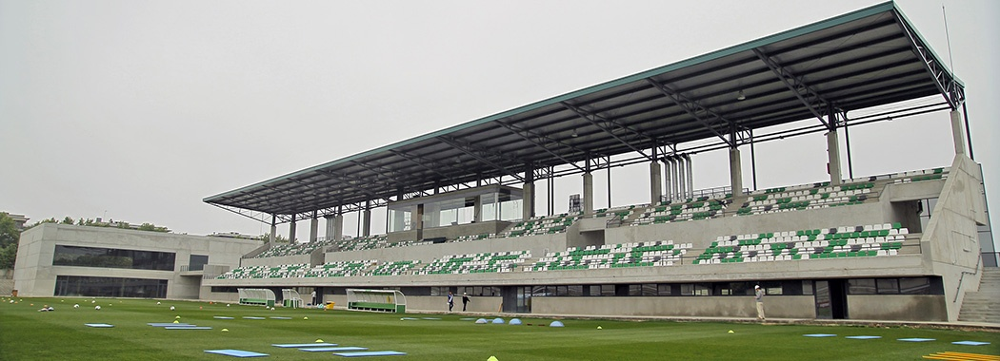
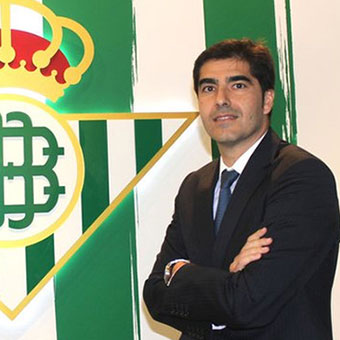

Real Betis Feminas

Estadio
Ciudad deportiva Luis del Sol
Presidente
Ángel Haro Garcia
Web Oficial
¿Qué es la fundación del Real Betis Balompié?
Fundación Real Betis Balompié tiene como fines de interés general la promoción del deporte y particularmente del fútbol, como instrumento para el fomento de la educación en valores, la lucha contra la marginación y la exclusión social, así como para fomentar hábitos de vida saludable entre la infancia y la juventud.
La Fundación ejercerá su labor como ente canalizador de la responsabilidad social corporativa del Real Betis Balompié, a través de la notoriedad, los valores humanos inherentes al beticismo y al deporte como instrumento para el crecimiento de la persona y como palanca de cambio y el entendimiento social tanto en la comunidad como a nivel internacional.
En este sentido, la Fundación trabajará desde los parámetros establecidos por los valores históricos, filosóficos y la dimensión social universal del Real Betis Balompié.